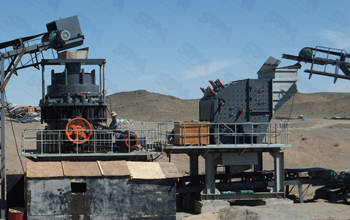

Cone crusher in the production process, the operator must follow the cone crusher operating common sense, proper operation and maintenance of equipment, only to extend the life of the equipment, the paper describes the production of three points cone crusher. In the production of the equipment we need to be examined to reduce production faults, let's look at the daily inspection of the cone crusher.
Check the tightness of components. Cone crusher spring pressure can not be too tight, too much pressure caused by broken shaft accident, the pressure is too easy to make a small spring frequent beating, affect the normal operation of equipment, and the product size thicker crushed; transmission belt installation can not be too tight, otherwise will cause the drive shaft rotation is not flexible, too loose will cause the device boring car accident.
Check the fastening member. To be checked before each turn all bolts tightened state, the various components within the inspection equipment, loose connections, especially the newly installed tire prone to loosening must always be checked. check the wear member. In production pay attention to check the wear of wear parts, minor wear and tear of parts to be repaired, the timely replacement of badly worn parts. Such as the rear frame liner wear, should be replaced, otherwise it will cause wear cabinet.
Check the heat generating member of the inspection. Bush bearing alloy casting talent for working in 100 degrees below normal, bearing temperature is too high will affect the operation of the bearing, or even broken, locking and other large accidents. So pay attention to check the cone crusher bearing operating temperature, high temperature should be immediately stopped and checked to find out and eliminate the cause. Check parts lubrication. Check that the lubrication system is working properly, the gear pump to work with or without a crash, the fuel tank of fuel and lubrication system for leaks, if that is not enough oil should be added in time. Also check the quality of the return line back to the oil, and lubricating oil is contained in the return pipe and other metal fine dirt, etc., if it should stop immediately open bearings and other lubricated parts inspection.
This series cone crusher is a summary based on the absorption of advanced crushing equipment on research and development of a new generation of broken equipment, and one set all kinds of broken equipment, widely used in fine crushing and superfine crushing hard rock, ore, slag, refractories.
Live chat with our professional customer service! Get the quotation list.
Chat Now